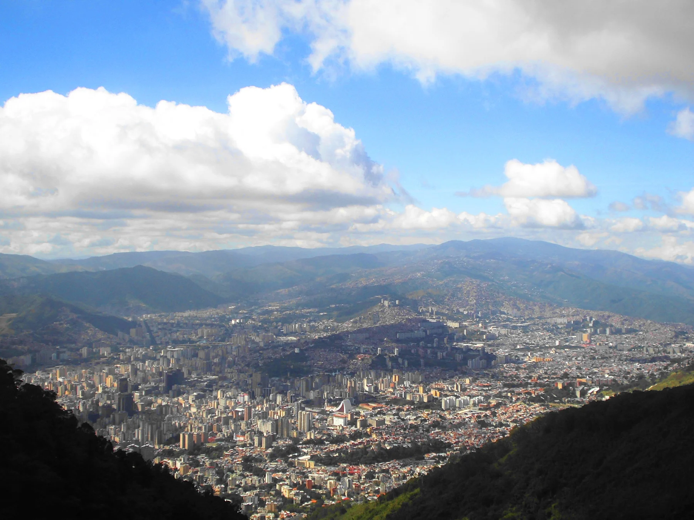

Literatura Entrada libre
Feria del Libro del Oeste de Caracas
Vie. 27 nov. · Consulta la programación
UCAB, campus Montalbán
Último día de la feria del libro de la UCAB, con puestos de libreros y editoriales y actividades culturales.
Encuentra espectáculos, restaurantes con descuentos y actividades deportivas en Caracas. Elige tu plan y reserva en línea.
Ver planes gratis del 27 al 30 de noviembreElige una zona, una fecha y una categoría.
Actividades publicadas por organizadores de Caracas
Explora los planes que han publicado los organizadores locales.
Explorar experiencias · Ver la demostración con anuncios ficticiosDel 27 al 30 de noviembre de 2026 · Hora local de Caracas
Literatura Entrada libre
Vie. 27 nov. · Consulta la programación
UCAB, campus Montalbán
Último día de la feria del libro de la UCAB, con puestos de libreros y editoriales y actividades culturales.
Exposición Entrada libre
Vie. 27 y lun. 30 nov. · 8:30 a. m.–4:30 p. m. | Sáb. 28 nov. · 11:00 a. m.–3:00 p. m.
Centro Cultural UCAB, Montalbán
Obras de 40 creadores en una muestra colectiva que explora la memoria en las salas Magis y Experimental.
Teatro Entrada libre
Vie. 27 nov. · 6:00 p. m.
Sala Cabrujas, Los Palos Grandes, Chacao
Lectura dramatizada de una obra de Moisés Berroterán, dirigida por William Cuao. Entrada libre hasta completar el aforo.
Gastronomía Entrada libre
Sáb. 28 y dom. 29 nov. · 10:00 a. m.–6:00 p. m.
Hacienda La Trinidad Parque Cultural, Baruta
Feria dedicada al pan de jamón venezolano, con un concurso de pan casero y actividades en torno al café.
Feria Entrada libre
Sáb. 28 nov. · 11:00 a. m.–5:00 p. m.
Museo de Ciencias, Parque Los Caobos
El museo abre sus espacios para una jornada de feria navideña en Bellas Artes.
Música Entrada libre
Sáb. 28 nov. · 2:00 p. m.
Museo de Ciencias, Parque Los Caobos
Presentación en vivo del Grupo Covert con un repertorio de distintos géneros.
Teatro Entrada libre
Sáb. 28 nov. · 6:00 p. m.
Sala Cabrujas, Los Palos Grandes, Chacao
Lectura dramatizada de una obra de Pedro Manuel González, dirigida por Nelson Lehmann. Entrada libre hasta completar el aforo.
Familiar Entrada libre
Sáb. 28 nov. · Hora por confirmar
Centro Comercial Manzanares Plaza, Baruta
Encendido de luces con gaitas, música en vivo y actividades para niños.
Música Entrada libre
Dom. 29 nov. · 2:00 p. m.
Teatro Simón Rodríguez, Caracas
Siete agrupaciones corales y el Taller de Cuatro TSR interpretan música navideña venezolana. Entrada libre hasta completar el aforo.
Exposición Entrada libre
En cartelera · Consulta días y horario de visita
Asociación Cultural Humboldt, San Bernardino
Selección de 39 fotografías de aventura en la Sala Edmundo y Hilde Schnoegass. La muestra continúa hasta el 13 de diciembre.
El Centro Cultural Chacao, en la avenida Tamanaco de El Rosal, reúne teatro, música y danza. Consulta las funciones, los horarios y la venta de entradas en su programación oficial.
Consultar la cartelera del Centro Cultural Chacao¿Cómo entras al evento? Después de confirmar el pago, abre tu entrada en «Mi actividad». Muestra el QR al llegar: el organizador lo valida una sola vez.
Publicación gratuita · Comisión del 15 % por venta confirmada
Sube una foto real y elige el lugar, la fecha, el precio y los cupos.

Caracas desde el ÁvilaEjemplo de anuncio · CaracasUS$20 por persona · 12 cuposCuando se apruebe tu anuncio, invita a tus clientes a reservar en el mercado.
Confirma los pagos recibidos y consulta tu ingreso y la comisión de cada venta.
12 reservasEjemplo · Ver mi actividad